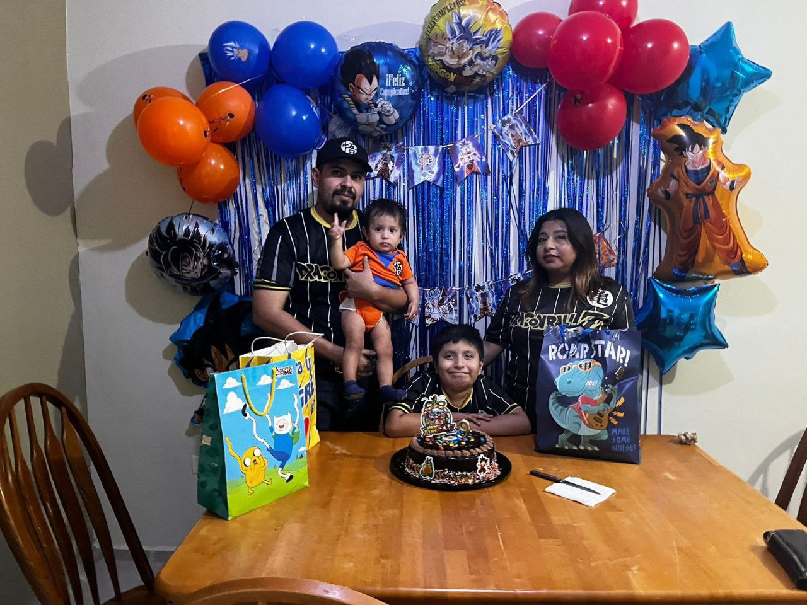

De preescolar a licenciatura (resumen)
Preescolar: Jean Piaget. Primaria: México. Secundaria: Escuela Secundaria Nro 3. Preparatoria: Conalep. Licenciatura: Ingenieria en Electronica Industrial, Facultad de Ingenieria Mecanica y Electrica.
Reconocimientos, participación y servicio
- Reconocimientos: (ej. promedio, becas).
- Participación en concursos: (nombre del concurso y año).
- Servicio social: (institución y periodo).
Primer día de clases, maestros, amistades
Deporte, arte y hobbies
Eventos familiares


Planes a corto, mediano y largo plazo
Corto: Aprobar el semestre
Mediano: Terminar carrera
Largo: Obtener plaza
Visión y objetivo profesional
Visión Ser un docente en formación con compromiso ético, humano y profesional, capaz de transformar positivamente la educación primaria mediante estrategias pedagógicas innovadoras, inclusivas y centradas en el alumno, contribuyendo al desarrollo integral de los niños y a la construcción de una sociedad más justa, crítica y participativa. Objetivo Formarme como un maestro de primaria competente, desarrollando conocimientos pedagógicos, habilidades didácticas y actitudes socioemocionales que me permitan atender la diversidad en el aula, fomentar aprendizajes significativos y acompañar a los estudiantes en su proceso formativo.
Dificultades superadas, aprendizajes y valores
Dificultades: Adaptación
Aprendizajes: Nuevas formas de trabajar
Valores: Disciplina y Compromiso